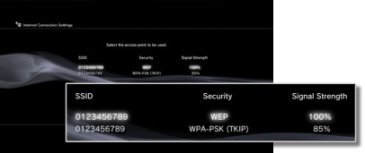
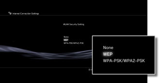
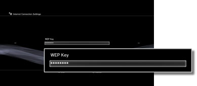

Settings > Network Settings > Internet Connection Settings (wireless connection)
Internet Connection Settings (wireless connection)
This setting is available only on PS3™ systems that are equipped with the wireless LAN feature.
Set the method for connecting the system to the Internet. Internet connection settings vary depending on the network environment and the devices in use. The following procedure describes a typical setup when connecting to the Internet wirelessly.
1. |
Check that the settings for the access point have been completed. |
|---|---|
2. |
Confirm that an Ethernet cable is not connected to the PS3™ system. |
3. |
Select |
4. |
Select [Internet Connection Settings]. |
5. |
Select [Easy].
|
6. |
Select [Wireless].
|
7. |
Select [Scan]. |
8. |
Select the access point that you want to use.  |
9. |
Check the SSID for the access point. |
10. |
Select the security settings that you want to use.  |
11. |
Enter the encryption key.  When you have finished entering the encryption key and have confirmed the network configuration, a list of settings will be displayed. |
12. |
Save your settings. |
13. |
Test the connection. |
14. |
Confirm the connection test results. |
 (Settings) >
(Settings) >  (Network Settings).
(Network Settings).

Hints
- If the connection fails, follow the on-screen instructions to check your settings. Also refer to the information from your Internet service provider and the instructions supplied with the network device in use.
- If you test the connection immediately after selecting [Automatic] > [AOSS™] in step 7, the router settings may not be completed and the connection may fail. Wait approximately 1 or 2 minutes before testing the connection.